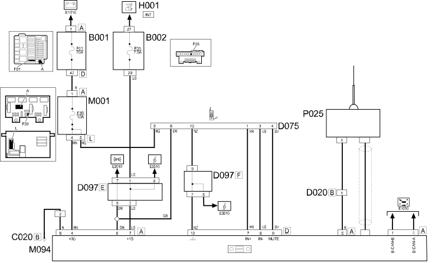

E3580 PREPARATION FOR CELLULAR TELEPHONE - Wiring diagram
- Path
- Electrical equipment > 1 ELECTRICAL FUNCTIONS > E35 Radio accessories > E3580 PREPARATION FOR CELLULAR TELEPHONE > E3580 PREPARATION FOR CELLULAR TELEPHONE - Wiring diagram
- Kind
- wiring diagram
- Applies to
- all engines; all production periods
- Interactive page
- https://sloeber94.github.io/elrnDB-fPnd/en/#/2751516
Applies to: all engines; all production periods
Wiring diagram

COMPONENTS
Component code | Name | Assembly reference |
|---|---|---|
Engine compartment junction unit | ||
engine compartment junction unit | ||
Junction unit under dashboard | ||
Passenger side dashboard earth | - | |
/Rear dashboard coupling | - | |
Rear dashboard coupling | - | |
Radio phone junction | - | |
Radio phone connection | - | |
Short circuiting coupling | - | |
Ignition switch | ||
Body computer | ||
Radio Receiver Node | - | |
Aerial amplifier/power supply | ||
Aerial amplifierpower supply |
Topics linked from this page (14)
- 5505A multi-function components
- 5505C vehicle compartment wiring
- 5520A ignition switch
- 5570T car radio and car telephone
- B001 JUNCTION UNIT
- B002 JUNCTION UNIT UNDER DASHBOARD
- C020 PASSENGER SIDE DASHBOARD EARTH
- D020 DASHBOARD/REAR COUPLING
- D075 RADIO PHONE COUPLING
- D097 SHORT CIRCUITING COUPLING
- H001 IGNITION SWITCH
- M001 BODY COMPUTER
- M094 RADIO RECEIVER NODE
- P025 AERIAL POWER SUPPLY